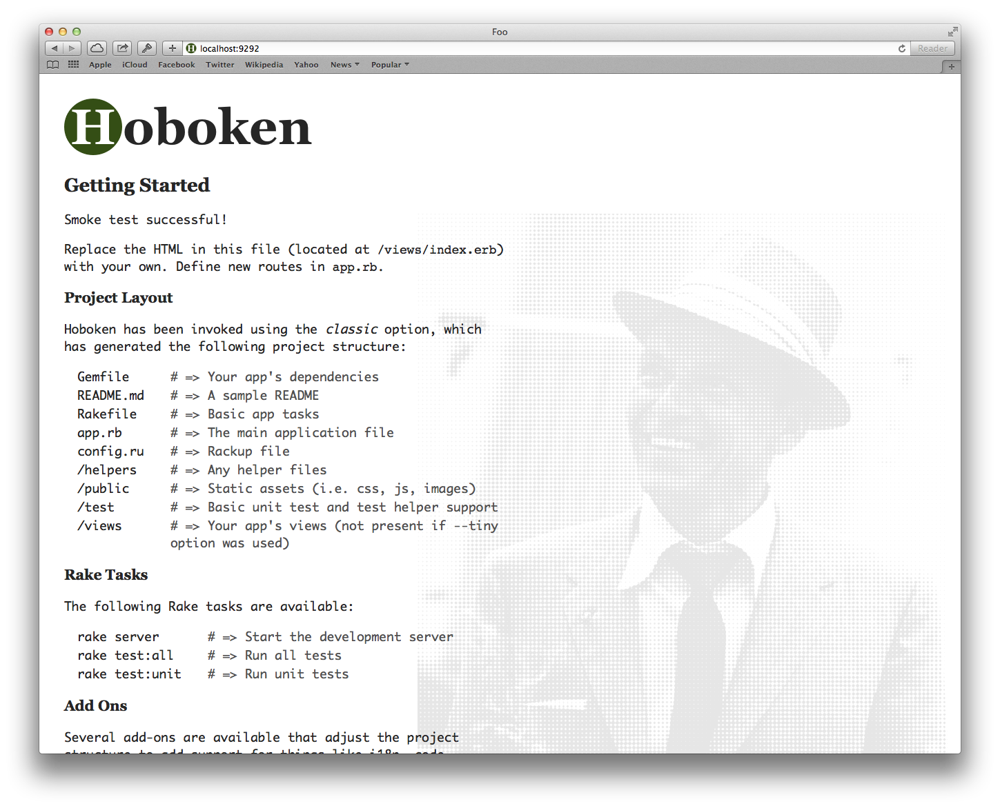

Hoboken

Hoboken is a Ruby gem that generates Sinatra projects. It keeps the folder structure simple and gets out of your way.
Getting Started
Installation
$ gem install hoboken
Generate a new Project
$ hoboken generate my_project
create my_project
create my_project/app.rb
create my_project/Gemfile
...
Successfully created my_project. Don't forget to `bundle install`
Start the Server
$ bundle exec rake server >> Using rack adapter >> Thin web server (v1.5.1 codename Straight Razor) >> Maximum connections set to 1024 >> Listening on 0.0.0.0:9292, CTRL+C to stop
Your app is now running on localhost on port 9292. Check it out in a browser!
Next Steps
Read the documentation to learn more about generation options, project structure, and add ons.